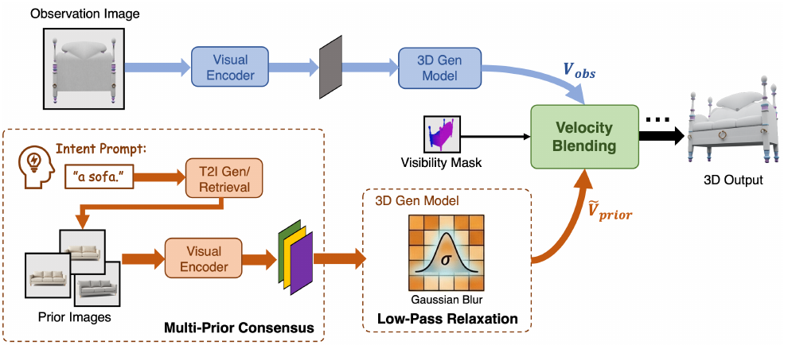
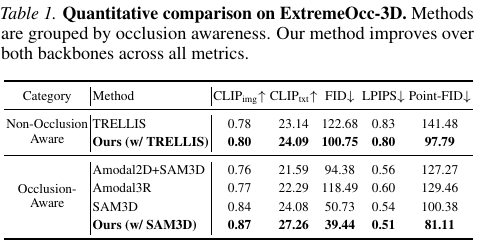

阅读归档：2026 年 10 月。今日 1 篇精读＋5 篇泛读，已按历史arXiv ID及本地Zotero去重；精读PDF已导入 每日精读论文/2026/10，泛读只读版本固定的HTML、不下载PDF。各论文原始出处、首个发表月份与版本单列，阅读月份不冒充发表月份。
| 论文 | 方法与所检验的核心问题 | 证据与迁移边界 | 来源 |
|---|---|---|---|
| RelaxFlow，2026-03首发 | 观测与语义分支，谁有权改隐藏部分 | 语义/感知与条件理论；不是隐藏真值保证 | arXiv v2、PDF、官方代码、本地Zotero |
| MHE-Former，2026-09 | 条件flow/熵，歧义应在哪里展开 | 多假设与选择，概率校准未证 | arXiv v1 HTML |
| Argus，2026-06 | 共视锚定/分解监督，几何如何互相约束 | 室内米制重建，绝对尺度仍有先验 | arXiv v3 HTML |
| 3DCodeVerse，2026-10 | 可执行程序/空间反馈，验证器能证明什么 | 生成与运行环境，非真实背面识别 | arXiv v1 HTML |
| ORCA，2026-09 | 复用RGB-D/生成分路，缺覆盖还是缺信息 | IQA与自洽，真实隐藏几何未充分评 | arXiv v1 HTML |
| EscherNet++，2025-07首发 | masked NVS，视图一致是否三维真实 | 指定遮挡基准，生成图非新测量 | arXiv v1 HTML |
今天的共同根因是测量与先验被赋予了混淆的地位。RelaxFlow分控制权，MHE保留多解，Argus约束测量坐标，ORCA审查是否需要生成；3DCodeVerse引入外部检验，EscherNet++把跨视角猜测放入共同过程。这些机制互补，不能只看是否都用了Transformer或扩散。
第二条共同边界是自洽不保证真实：同一个错误三维形状可以多视角一致，运行无错的程序可以有错误功能，集合指标更好也可能漏掉某个实例背面。每篇因此给出两层根因、模块因果链、实验问题/设计/答案、迁移条件与反证，而不是统一写“泛化差”。
第三条研究线索是让补全可被新证据撤销。六篇共18个idea均为未运行、未系统查新的研究假设，分别检验前提、做反事实诊断、连接amodal/三维。没有启动GPU或下载泛读PDF。Nature Reader附加读本明确是章节式源文转述/公式图表对照，不冒充全文翻译。
阅读归档：2026 年 10 月。作者：Jiayin Zhu、Guoji Fu、Xiaolu Liu、Qiyuan He、Yicong Li、Angela Yao。原始出处：arXiv:2603.05425，首次公开 2026 年 3 月；本次固定阅读 v2，2026-05-27，28 页。全文 · 官方代码 · Nature Reader 附加读本。
PDF与摘要页标注 ICML 2026 spotlight；本次已独立核验正式PMLR记录。直接抓取页面的引用页码为PMLR306:166962–166989，BibTeX月份字段写会议日期2026年7月6–11日，而citation_publication_date写2026-09-29；搜索缓存曾显示另一组页码，最终以已保存的官方页面元数据为本次记录依据。因此分别记录预印本首发2026-03、会议引用月2026-07、出版社页面发布日期2026-09-29、阅读归档2026-10，不把会议月和页面发布日期混为一谈。spotlight展示类别仍是PDF/arXiv声明，未另核验。阅读与附件固定为arXiv v2，未逐页比较正式论文集PDF。Zotero：每日精读论文/2026/10，条目 8SC9FOQH，PDF附件 TQBKESRF。代码固定检查提交 b41b6187cd25d04a26fe3940049e43485c0acc45；源码与示例可见，未下载权重、未运行模型。许可为SAM License，不能写成MIT。
【论文原文事实】只看见一块木质靠板时，它可以属于床、沙发或梳妆台。模型若只给一个完整三维物体，往往选择训练先验最偏好的解释。RelaxFlow允许用户说“这是一张沙发”，让文字决定不可见部分的大类，同时尽量保留已经看见的靠板。
【基于证据的解释】第一层为什么：遮挡把区分类别的扶手、坐面、支撑等证据拿走，几个不同物体经过投影和遮挡后可以得到同一输入。第二层为什么：成像映射是多对一，隐藏结构对当前像素没有影响；更强网络也不能从完全相同的输入区分两个真值。所谓“补全错误”至少分成两类：缺少证据导致无法唯一判断，以及模型没有正确利用已有证据。本文主要改善前者的可控选择，并缓和选择意图对已有证据的破坏；没有消除不可辨识性。
核心直觉是：照片告诉模型“哪些部分必须保持”，文字告诉它“在剩下的自由度里往哪种解释走”。参考图只是文字的视觉代理，其中的颜色和细节不应全部复制。两类条件若用同样强度、同样空间范围指导生成，就会互相争夺同一个三维状态。
【论文原文事实，摘要、§1–2】论文提出文字驱动的amodal三维生成；用训练之外的推理改动，把观测分支与语义先验分支分开；语义分支用多个参考图及attention-logit低通平滑；通过可见性与时间门控融合；建立ExtremeOcc-3D和AmbiSem-3D两个诊断基准。
已有方法的缺口不是一概“精度低”。图像到三维模型擅长保持照片，却没有显式意图接口；先二维补图再三维重建，会把补图的一个猜测提升为“观测”；把不同实例的参考图当成同一实例的另一视角，会要求本来不相容的纹理、尺寸同时满足。本文引用的Amodal3R、DeOcc-1-to-3侧重训练后自动补全，重点不同于“不重新训练、用外部意图挑选合法解释”。这些关系来自本文相关工作及本地历史笔记，不构成穷尽查新。
【基于证据的解释】更深的冲突是条件的证据地位不一样：观测像素是该实例的测量，参考图是别的实例的先验样本。如果模型把二者都当作同等级测量，那么复制先验的花纹会直接违反照片。仅调一个全局引导权重，无法同时解决“哪里可以改”和“可以改到多细”两个问题。
【基于证据的解释，非作者自述】先把多解问题改成“观测固定、意图可变”的任务；再发现预训练三维模型只接受视觉tokens，于是将文字转换为检索/生成参考图；随后发现单张参考混有过多实例细节，便拼接多个参考并平滑attention；最后发现平滑仍会改动可见面，于是加空间可见性与早期引导、后期退出的时间安排。
这条路径没有新训练损失。Training-free是没有为RelaxFlow重新训练生成器，不是没有训练数据和先验：能力来自已训练的SAM3D/TRELLIS、视觉编码器和可选文生图模型。引用其预训练信号时要与本文实际执行的推理修改分开。
【论文原文事实，§4】输入照片、目标可见mask和“a sofa”。检索三张不同沙发，或从文字生成参考图，使用原生成器的视觉编码器得到参考tokens，沿序列拼接。相同类别反复出现的结构会得到较多聚合注意力，但这不是一个显式投票或真值一致性检验。
例如木板可见、坐面被挡：从同一个噪声状态开始，观测条件预测一个速度，参考条件预测另一个速度。先验分支在softmax之前平滑query/key方向的logits，弱化局部尖锐匹配；前期混入先验速度决定较粗的类别模式，超过截止步后返回观测分支。稀疏结构SS阶段产生64³占据格，SLAT阶段产生占据位置上的特征，最终解码成mesh或Gaussian表示。
在SLAT中，用backbone估计的pose把体素投影到观测相机，建立z-buffer。前面的表面权重接近1，后面被遮挡位置权重较小：先验更多影响后者。它保护的是模型估计为可见的位置；pose、分割或粗几何错时，这个保护范围也会错。TRELLIS设置没有pose，作者关闭该mask，因此不能说所有backbone都用完全相同的可见保护。

【论文原文事实】原式(8)，PDF第6页，对先验分支logits做两次一维高斯卷积：
$$ \widetilde L=G_\sigma*L=(G_\sigma^{(q)}*_q L)*_kG_\sigma^{(k)},\qquad \operatorname{Attn}(Q,K,V)=\operatorname{softmax}(\widetilde L)V. $$
$L$来自query与key的相似度，$\sigma$控制平滑范围。直觉是不要被参考图一个尖锐局部匹配强拉过去；删掉后Point-FID变差，但不能据此断言“所有高频都是噪声”。细杆、孔洞、螺纹等也可能包含决定类别或功能的高频信息。
【论文原文事实】原式(9–10)，PDF第6页：
$$ x_{k+1}=x_k+\Delta t\big((1-\alpha_k)v_{\rm obs}+\alpha_k\widetilde v_{\rm prior}\big),\qquad \alpha_k=\begin{cases}1-k/K,&k\le\lfloor\rho K\rfloor,\\0,&\text{otherwise}.\end{cases} $$
$x_k$是当前三维latent，$K$为步数，$\rho$决定何时停止先验引导。两分支在同一个状态预测速度，不是分别生成两个物体后混mesh。早期类别走错，后期高频修饰通常难以改拓扑，所以引导前置；但类别恰好依赖细部时，这种粗细分工可能失配。
【论文原文事实】原式(11)，PDF第7页：
$$ v_i=v_{{\rm obs},i}+(1-m_i)\alpha_k(\widetilde v_{{\rm prior},i}-v_{{\rm obs},i}). $$
$m_i\approx1$时回到观测速度；$m_i\approx0$时允许先验修正。它是soft gating，不是逐像素投影到严格可行集合。即使局部速度来自观测分支，后续共享解码器仍可能耦合区域，因此“严格保持”应作为作者目标，与实验中非零LPIPS分开。
【基于证据的解释，§3、附录A】理论先假设理想语义速度主要为低频、误差主要为高频，才讨论平滑降低误差；再依赖Lipschitz条件与代理偏差可控，给Wasserstein距离上界。附录A.4连接logit平滑与速度变化的是Lipschitz控制：输入logits改动有限，输出速度改动被限制。这不等于经过softmax、value混合及后续非线性后，输出速度精确等于同一个高斯卷积。更紧上界也不意味着两次真实误差必然按同样顺序排列。理论没有逐实例证明背面几何恢复正确。
Amodal【原文用法】：超越当前可见片段，表示完整对象；不是把挡住的像素设透明。根因是缺证据，需要先验或新观察。删除补全先验只保留测量，可以诚实恢复可见面，却不能推断全部物体。
Rectified flow / ODE速度：这里的“速度”是latent从噪声到输出的变化方向，不是物体真实运动。预训练模型学会这些方向，本文在推理时融合方向。若参考与照片矛盾，两个方向的平均可能到达二者都不满意的中间态。
Multi-Prior Consensus：多个先验共用类别、改变无关外观，试图让共同结构反复出现、偶然细节被稀释。它依赖参考足够多样且一致；若三张都是同一有偏模板，共识会增强偏差。更多参考也不必然更好，作者的数量消融已有退化。
Attention sensitivity：这里指局部tokens/logits扰动对引导结果的影响，不是分类“敏感度”指标。若softmax把权重集中在参考图某个颜色斑块，微小纹理/相机差异会让注意力切换，变化沿多步ODE累积，和观测分支反复冲突。平滑减少尖锐差异；但其在所有三维token顺序下对应怎样的空间频率，需要进一步检验。
【事实与机制解释】模块逐项对应：
【论文原文事实，§5、PDF第7–9页】ExtremeOcc-3D有264个遮挡率至少80%的案例，参考取不同实例同类别对象；AmbiSem-3D有21个多解释案例，参考由Z-Image生成，比较方法共享参考。附录E还扩展100个案例。固定默认$\sigma=1.0,\rho=0.2,N=3$。正文GPU为A40，附录运行成本用A5000的10样本随机子集，不能混成同一测量条件。
| 要回答的问题与协议 | 原文结果 | 实际支持什么 |
|---|---|---|
| 同一backbone加外部语义后是否更符合目标，ExtremeOcc Table 1 | SAM3D→Ours：CLIPtxt 24.08→27.26，Point-FID 100.38→81.11，LPIPS 0.54→0.51 | 指定语义与分布指标改善；未测得逐实例真实隐藏误差 |
| 多解时人更愿意选哪个，AmbiSem Table 2 | 32名参与者，21例；总体偏好68.52% | 对这批案例的偏好，非68.52%真实几何恢复率 |
| 平滑/可见mask有无用，Figure 6(a) | 完整81.1；去平滑87.1；去mask92.3；$\sigma=2.5$为95.2 | 支持组件有用且过度平滑有害；未排除所有替代机制 |
| 扩展案例是否同向，附录Table 5 | SAM3D/Ours：CLIPimg .839/.845，CLIPtxt 25.6/26.9 | 有同向扩展证据，仍为语义/感知指标 |
| 推理是否免费，附录Table 6 | SAM3D 15.59→38.40秒，2.46倍；TRELLIS 12.81→23.31秒，1.82倍 | 不重训省的是适配训练，双分支增加推理成本 |
min-LPIPS在每例10张预测视图中，经统一中心裁剪/resize，取与处理后观测的最小值；不是多次随机生成取最好，也不是固定真实相机误差。改变候选视图数后不能直接比较。CLIP测语义嵌入相似；FID/Point-FID测集合特征分布。Table1的FID为50.73→39.44，但扩展基线的文本CLIP并非全胜：Table3 Nano Banana Pro+3D为27.49，高于Ours27.26；Table4的27.41、27.24也高于Ours27.23。应理解为观测/语义/分布指标的折中。分布更像一类物体，与某一具体实例背面的孔洞、支撑、拓扑更正确，是不同问题。原文主动将多解任务与单一真值几何误差分开，这有合理性；也意味着用于机器人测量时必须补另一套评估。

【论文原文事实】任务上把“用文字改变隐藏解释、观测不变”显式化；方法上组合视觉代理、多先验、低通与可见/时间融合；理论上给条件化的误差与稳定性分析；评估上提供诊断集。本次可核验的是原文、代码文件、指标与消融，尚未独立复现或完成系统查新。
【基于证据的解释】四个根本边界：
附录H原文承认观测和先验必须总体兼容；不同且冲突的正脸会形成软概念融合、两边都可能不忠实。代码README要求SAM3D环境及至少24GB GPU，入口接收先验图片而非一个自动完成所有文生图步骤的文字服务。代码中fallback blur设置与论文默认还需结合实际config核验，本次不宣称“一条命令完全复现论文”。
【基于证据的解释】源机制是按证据地位分配控制权，不是“有三维所以能用于三维”。目标amodal轮廓同样有可见部分必须守住、隐藏轮廓可多解的结构；三维重建有真实相机射线/深度约束与未观测体积的区分；三维amodal则需同时维护完整对象先验和已观测表面。这些同构关系使分支思想可迁移。
必要条件：可信相机/分割/可见性；先验能表达目标形状；生成器有可访问的条件或中间表示；目标必须明确区分“测得”和“猜得”。二维可用可见mask约束；三维要增加已观测表面、自由空间以及跨视角一致性，不能只把二维mask投到粗体素就认为已经完成三维证据隔离。
错配及改造：稀疏多视角得到的新真实表面应有权推翻先验；动态物体要先做时空对应，否则上帧可见面会被误锁到下帧；UAV远距小目标的pose与尺度误差需进入概率可见性；场景中多个对象有支撑、碰撞、遮挡顺序约束，单对象“像沙发”不能保证布局成立。若新增真实视角之后隐藏面仍顽固跟随文字，或可见误差随参考数量上升，迁移失败。
调研地图：本地Zotero含pix2gestalt、Open-World Amodal Appearance Completion、NOVA3R、Amodal Depth Anything、OccJEPA；本次六篇又覆盖多解姿态、全景几何、可执行程序、局部新视角修补、联合NVS。最近邻关系是机制与任务比较，未做穷尽前向引文及独立新颖性审查。Semantic Scholar接口返回429，未冒充成功。下列全部是【我们提出的研究假设】，没有运行实验。
假设：平滑有效性取决于“判别信息的频率”，并非语义总为低频。步骤：建立相同外轮廓、只在孔洞/细杆/连接处不同的配对物体；固定照片、参考和随机种子，扫$\sigma$并测隐藏拓扑与语义；加入粗轮廓类别作对照。最小实验先用20组已有mesh渲染与attention频谱分析，后续有现成权重时才做冻结模型推理。阳性：细结构类别随平滑失真、粗类别改善，支持频率条件化门控；阴性：两组同样改善，当前反例不足以挑战假设；无信号：表示分辨率在滤波前已抹掉细部。贡献：检验理论前提而非再加模块。风险：token频率未必等于欧氏几何频率，需控制token排列。关系：直接挑战附录A.2的适用范围，查新未完成。
假设：一部分“先验污染可见面”源自pose/粗几何错判，另一部分来自解码器区域耦合。步骤分两层：①固定相同中间状态$x_k$，替换真值/估计/pose扰动mask，比较瞬时速度泄漏；②固定相同初始噪声、先验、求解器与步数，完整rollout后比较最终可见误差。最小实验10个合成物体、三档pose扰动，离线z-buffer仅回答mask错分；第二层需要冻结模型推理，不训练。阳性：完整rollout中真值mask显著修复，说明门控估计是瓶颈；阴性：真值mask仍漂移，需检查解码耦合或观测分支；无信号：遮挡不足或只完成第一层，不能下最终生成结论。贡献：定位闭环错误责任。风险：GT geometry引入额外信息，只作单列诊断。关系：反事实检验原式(11)，不是已验证改进。
假设：用于真实三维amodal时，单次固定语义模式不如“候选后验+可撤销先验”。步骤：从首视角生成3–5个完整形状，独立标记测得表面、已知自由空间和未知；新视角到达后按真实深度/轮廓筛选或修改候选，仅在仍未知区域使用先验。最小实验20个具有相同首视角、不同背面的配对mesh，先实现候选重评分与可见体积更新，无需训练。阳性：新视角减少错误候选且旧可见面保持；阴性：所有候选已共享同一错误拓扑，表示/先验覆盖不足；无信号：新视角未看见区分部位。贡献：把可控生成改成能被证据推翻的补全。风险：候选成本与相机误差，需报告误删真实候选率。关系：承接RelaxFlow控制分工，结合多假设与几何验证；不是论文原有能力，非增量性与新颖性需后续检索。
【我们提出的研究假设】前两日核对SAM3D许可、环境、权重与实际配置，做20个可控遮挡mesh；第3–4日只做冻结推理及组件开关，资源不足先离线检验可见性；第5日固定相机算可见/隐藏分项、拓扑和开销；第6–7日重复随机种子、检查负例。先验证“分工是否有效”，再讨论自适应滤波。今天没有启动这些实验。
最强反例：两件物体有同样正面木板，背面一件有承重框、一件没有；照片与提示都一样。算法应给相同条件分布，无法同时唯一恢复两个真实背面。若只用语义偏好评估，两者都能得高分。要挑战的不是“模型能否生成沙发”，而是“这份补全能否被当成该实例的测量”。
【基于证据的解释】论文真正留下的是一套实用控制原则：已有证据与外部先验应当有不同权限。理论提供有条件的解释，指标提供指定任务的证据；隐藏真值、概率校准、跨视角新证据的撤销机制仍未解决。
| 项目 | 内容 |
|---|---|
| 表面症状 | 遮挡后锁定错误类别；文字引导又破坏可见部分 |
| 第一层根因 | 缺少判别信息，参考实例细节与观测冲突 |
| 第二层根因 | 多对一成像；把测量与意图当成同等级条件 |
| 方法作用点 | 视觉代理、多先验、logit平滑、时空速度融合 |
| 隐含前提 | 语义与误差可频率分离；参考兼容；可见性估计可信 |
| 失败触发器 | 细部决定拓扑、共同先验偏差、错误pose、互相矛盾的输入 |
| 迁移必要条件 | 可见测量/自由空间/隐藏假设分开；新增证据可推翻先验 |
| 反证实验 | 同轮廓细拓扑配对、真值mask替换、首视角同像背面异形 |
| 证据边界 | 语义控制与指定指标改善；无唯一隐藏真值、无本次模型复现 |
来源定位：PDF/HTML §1–2（任务与相关工作），§3/附录A（假设与上界），§4（机制），§5/Table1–2/Figure6（实验），附录D（指标）、E/Table5–6（扩展与成本）、F（可见性）、H（冲突失败）。
作者Boshu Jia等。arXiv:2609.10743，首次公开2026年9月；固定v1全文。本稿正式venue未核验，不能把其理论前身MHEntropy的ICCV 2023归给本稿。阅读归档2026年10月；只读HTML，不下载PDF。
【论文原文事实】一张握杯子的照片，杯子挡住手指，同样的可见指节可以对应多种三维弯曲。方法先探索多个姿态，再利用额外图像、交互约束或VLM挑选。探索阶段是条件normalizing flow与熵最大化，MH-Decoder同时处理相机、形状和姿态；不是简单把同一模型运行多次就声称获得有效不确定性。
【基于证据的解释】第一层为什么：二维投影只限制图像平面位置，深度与被挡关节仍有自由度。第二层为什么：单一标签的点回归把多解后验压成一点，平均姿态甚至可能不合法；仅增加预测头也可能都学常见姿态，因为训练目标奖励它们靠近同一个标签。作者需要在可见一致性约束内主动推动候选分散，而非只“提高准确率”。
【原文事实，§2、4–5】确定性mesh恢复与现有多假设方法是直接比较对象；本地已有amodal形状与深度论文提供任务侧背景。本文状态空间是手/人体参数，不能当成通用物体三维生成。调研范围是其完整相关工作与本地库，未穷尽查新。
【基于证据的解释，反向重建】承认逆问题多解→把输出换成条件分布→需要可计算密度以优化分布→使用可逆flow→缺少每幅图的多解标签→用受约束最大熵补足→最终应用需要行动→再用外部证据选择。核心直觉：可见部分越确定越应集中；没有证据的部分应保留多种解释。最大熵不是让一切都乱动。
Normalizing flow：把高斯噪声经可逆变换映到姿态分布，可计算密度与熵，解决“随机候选是否属于一个可训练分布”的问题。删除flow只保留回归头，随机差异未必对应真实模式；若姿态先验漏掉少见动作，再可逆也无法自动补足缺失知识。
Entropy maximization：在投影和先验约束内扩大条件分布。太小会坍缩，太大产生不符观测的姿态，原文Fig.5有此权衡。熵大不等于概率校准正确。
PJD/RD：PJD量候选关节的分散程度；RD比较可见二维与遮挡三维的分散，比“全身越分散越好”合理。低RD也可能来自分子和分母同时退化，需要同时看绝对误差、覆盖率。它不是sensitivity分类指标。
LoRA：用低秩增量调整视觉编码器，减少全量微调代价；作用在表征适配，而非凭空增加深度信息。Table VIII显示精度/多样性/代价的折中，不能解释为LoRA一定优于所有完整微调。
【原文事实，Eq.8、17、20–21】后验关系为$p(\theta\mid j,c,\beta)\propto p(j\mid c,\beta,\theta)p(\theta)$；$j$为二维关键点，$c$相机，$\beta$形状，$\theta$姿态。损失把可见重投影、姿态/形状先验和熵项结合；证据选择再用额外证据评分更新姿态。它明确把“符合当前投影”与“符合姿态先验”相乘，两个约束都无法唯一确定完全不可见部分。
握杯例子：图像→ViTPose tokens→共享相机/形状与随机姿态分支→不同噪声经flow得候选→MANO生成mesh→投影可见关键点计算L1→推理采样→用杯子接触或新视图筛选。杯子接触是流程教学例子，不是今天运行的实验。
因果链【事实与解释】：RGB和可见标签→图像tokens、条件姿态分布→重投影与先验收缩可见误差、熵扩大可行候选→遮挡部分分散而可见部分集中→减少点估计过度自信→失败触发器为相机/形状共享估计错误或先验排除真解。选择模块：额外证据→候选评分→优化/排序→减少歧义→失败触发器为VLM偏好替代真实几何。两者不能互相冒充证明。
【论文原文事实，§6】贡献包括探索-利用范式、MH-Decoder、最大熵训练、局部化多样性指标与选择。Table IV在H36M中PA-MPJPE从原始41.3到额外证据31.3、多视角28.9，单位mm，回答“补入信息能否减少歧义”。Table V的HO3D是二维JPE：All 8.26、Random 8.25、VLM 8.21，该表未明确坐标单位，不能补成毫米或三维误差；interaction loss相应0.12、0.13、0.08，是穿透率和接触距离的加权损失。二维定位收益与交互指标尺度不同，不能只说“大幅提升”。用户研究169份有效问卷、3380次选择，回答偏好而非隐藏真值。
原文BH是从候选中选最佳的oracle式评价；实际部署没有真值，不能把best-of-K直接当部署性能。AH、候选分散和真实覆盖需一起看。论文有精度与多样性证据，但没有证明所有概率都校准。
【基于证据的解释】固定相机$c$和形状$\beta$、主要让姿态变化，隐含“歧义主要在姿态”。相机一错，所有候选会共享同一投影系统误差；增加候选数也覆盖不到正确相机下的解。这是不确定性归因错配。最大熵也只在表示与先验允许的集合里探索；MANO/SMPL之外的拓扑，不会因熵变大而出现。
迁移的源机制：部分证据下学习多模态条件分布。目标同构：amodal轮廓与三维隐藏面同样多解；必要条件：可见一致性可计算、候选表示覆盖真实几何、有新增证据筛选。错配：关键点/低维人体参数不能表达任意孔洞与拓扑。改造：改成occupancy/SDF/mesh latent，用真实深度、轮廓、自由空间约束已观察部分，只对未知部分探索。失败触发器：遮挡mask不可信、动态对应错误、全部候选共用错误形状先验。此段是机制迁移推断，论文未完成通用三维amodal任务。
以下均为【我们提出的研究假设】，未运行、未系统查新。
假设：共享错误相机/形状会限制姿态覆盖。步骤：先在合成数据分别加入相机、形状、姿态歧义，再比较固定$c,\beta$与联合采样；保持总候选预算相同。最小实验是两节骨链与两种体型的可控投影，量真解覆盖、可见误差及候选成本。阳性：联合采样提高覆盖且可见误差不升；阴性：只是更分散、覆盖不变，瓶颈可能在先验；无信号：相机/形状变化太小。贡献：检验不确定性归因。风险：维数增加导致预算爆炸。关系：扩展原分解，非已验证新方法。
假设：合理模型应因删除关节证据而局部展开，不应因背景换色而全身发散。步骤：固定真实姿态，分别做遮挡、背景替换、小幅纹理扰动；比较可见误差、遮挡coverage、每关节分散。最小实验20个样本、四级遮挡，先分析冻结模型。阳性：只在丢证据处增不确定性；阴性：无关纹理也引发全局漂移，说明捷径或熵未局部化；无信号：模型可能塌缩，需检查绝对PJD。贡献：把多样性与正确的不确定性定位区分。风险：人工扰动不自然。关系：反事实检查RD的充分性。
假设：只让未知三维体积多样，比全mesh随机化更守住测量。步骤：可见表面编码→多候选隐式场→可见深度/自由空间约束→只在未知域鼓励差异→新视角重评分。最小实验20个配对mesh，用同首视角不同背面真值，比较确定性、全局随机与未知域随机。阳性：隐藏coverage提高且可见误差稳定；阴性：候选多但都不含真值，表示/先验不足；无信号：测试没有真实多解。贡献：三维amodal中的证据分工。风险：未知区域边界不准。关系：迁移原探索机制，超出人体参数空间。
一周先用MLP+RealNVP在两节骨链四模态投影做玩具复现，扫描熵权和观测比例，后验证相机扰动。无需大模型训练；这是计划，不是今天结果。最强反例：共享同一可见平面和轮廓的实心盒、带孔箱子，当前二维关键点相同，人体式姿态流无法覆盖这种拓扑歧义。
【基于证据的解释】值得借鉴的是“让分布对证据缺失作有位置的响应”；不能借多候选宣称已经知道不可见真值。
| 项目 | 内容 |
|---|---|
| 表面症状 | 遮挡处过度自信或候选不足 |
| 第一层根因 | 投影与遮挡使状态不唯一 |
| 第二层根因 | 单标签点估计把多解压成一个模式 |
| 方法作用点 | flow分布、最大熵、可见重投影和额外证据选择 |
| 隐含前提 | 相机/形状可靠，姿态先验覆盖真解 |
| 失败触发器 | 错相机、OOD姿态、VLM误选、表示不含真实拓扑 |
| 迁移必要条件 | 可见约束、适合目标的多解表示、新证据 |
| 反证实验 | 同投影异三维，比较coverage而非仅BH |
| 证据边界 | 特定基准精度/多样性，不证明校准或通用隐藏几何 |
Xi Li等，arXiv:2606.30047，首次公开2026年6月；本次v3全文，2026-07-06。项目原文列出argus-paper.realsee.ai，代码可运行性本次未核验。阅读2026年10月，只读HTML、不下载PDF。
【论文原文事实】从稀疏、无序的室内全景照片输出相机姿态、深度与统一坐标点云。Realsee3D有10000场景，真实/合成1000/9000，299073拍摄位置。Argus学习选参考照片，并分解像素→世界点的坐标转换，给各步及跨步约束监督。[§3–4]
【基于证据的解释】第一层：房间边缘的参考照片与远处图共视少，跨图姿态约束弱，误差沿连接传播。第二层：所有点最后写入同一坐标系，锚的错误影响全局；物理场景不因换原点改变，但有限网络的信息聚合与学习条件会改变。它优化的是坐标选择带来的数值与学习难度，没有新增物理观测。
相关工作不足还有一层：透视模型遇到ERP全景，像素到射线规律变了；直接预测世界点又把深度、旋转、平移混在一起，一个分支的错可被另一个补偿。因果上“世界点误差小”未必说明每个几何量都正确。
【基于证据的解释，非作者自述】输入顺序敏感→观察到边缘锚与漂移→用真实几何构图找中心→学习选择参考→仍有深度/pose补错→将确定几何运算写进监督。核心直觉：先选容易连接各图的坐标锚，再让不同预测路径对同一三维点给相容答案。
例子：六张客厅/走廊/卧室全景。DINOv2 tokens→两层Covisibility Transformer给参考评分→最高分换到参考位置→24层Geometry Transformer→相机分支与DPT深度/点图分支→共同世界坐标。走廊可能连接多间房，角落照只连少量邻图；这是解释例，不是新增实验。
共视性：用真值深度和pose检查两张图是否看见同一表面。附录B先算$s_{ij}=c_{ij}/\mathcal P$，再把$1/(s_{ij}+\epsilon)$作边代价，Dijkstra找最短路径$p_{ij}$，选$\arg\min_i\sum_jp_{ij}$。这不是单纯选直接重叠最多者。删掉会恢复第一帧偶然性；但共视高、小基线也可能几何不可辨识。
ERP射线：按经纬度将全景像素映射到单位射线$P_u$。Eq.2为$P_c=D\odot P_u,\ P_r=RP_c,\ P_w=P_r+t$，$D=\|P_c\|_2$。$D$是沿射线距离，$R,t$是姿态。固定ERP免去未知焦距，但没有从数学上消除绝对尺度歧义；图像角度相同、场景与相机平移同比放大仍可成像相同。米制输出依赖米制标签及室内尺度先验。
过完备监督：同一几何以深度和多个坐标点图表达，Eq.8让直接预测与变换路径都对齐真值。增加的不是信息，而是梯度约束，降低分支随意补错。删除后可能出现点图好看、pose却错；一致的错误对应仍可能同时满足约束。
Confidence：损失形如$(C+1)e-\alpha\log C$，权衡残差与置信度代价。不是校准过的正确概率，更不是分类敏感度；不能直接拿它作可靠拒识。
【论文原文事实+机制解释】RGB→共视tokens→真值几何产生中心标签、BCE监督→参考选择→减少全局漂移→失败：共视图错或重叠多却小基线。RGB→深度和多坐标点图→独立残差及变换联合残差→分支相互约束→一致点云→失败：重复结构的错误对应。室内外观→带尺度先验的表征→米制标签、统一归一化→米制深度/平移→失败：室外长距离改变外观-尺度统计关系。上述机制解释不能与消融的统计因果强度混同。
【论文原文事实】真实与合成分别按场景9:1切分；训练2–28图且保证连通。VGGT360、MapAnything360、π³360同数据适配；全景560×280后上下各裁15%，实际560×196。[§5–6]
| 问题/协议 | 结果 | 能说明什么 |
|---|---|---|
| 无尺度对齐，真实集ATE↓，Table2 | Argus .096，MapAnything360 .134 | 米制位置误差降低 |
| 真实集AUC@5°↑，Table2 | Argus71.88，π³360 72.39 | 不是每个指标第一 |
| 无对齐深度AbsRel↓，Table3 | .050 vs MapAnything360 .070 | 指定分布深度改善 |
| 合成集参考消融，Table6 | ATE完整 .027，去参考 .060 | 参考学习有用 |
| 合成集联合约束消融，Table6 | AbsRel/ATE .035/.027；去除 .047/.049 | 约束有用，未隔离所有梯度解释 |
Table3的$\delta_1$阈值是1.03，不能套常见1.25。点云Comp.是相对已有真值点的距离，不能翻译为“全部隐藏表面恢复”。Table5的显存数字不含加载模型4.64GB。贡献可核验为数据、参考标签构造、分解监督及基准表现；今天未复现。
【论文原文事实】Table11合成仅训练迁到真实ATE .473，混合 .096；真实仅训练在真实AbsRel .047，比混合 .050稍好，说明加合成数据非所有项都涨。作者承认室外/航拍、低纹理大场景和大量图输入局限。
【基于证据的解释】域差根因：住宅中的有界尺度、布局与材质先验变了，户外远距、重复结构、弱尺度参照使“外观→米数”映射不再可靠。更多图若沿弱连接相连，仍会传播误差，并增加attention代价。全部图都没看到柜子背部时，一致几何监督仍没有背面证据。
迁移：源为共视锚定和多路径几何监督；三维重建目标同构是公共坐标与跨视角约束，必要条件为静态、图连通、相机模型正确。UAV/透视需换ERP射线与尺度分布。amodal可用它恢复“此视角不可见、别处可见”的部分；所有视角都不可见仍需独立先验。改造应分observed occupancy与hypothesized occupancy，真测量约束后者，不能把闭环一致当真实隐藏结构。动态物体、反射、错误pose是失败触发器。
以下【我们提出的研究假设】未运行，相关工作范围为原文VGGT/MapAnything/π³及本地重建笔记，未穷尽查新。
假设：共视高但基线小/纹理重复时中心标签不足。步骤：固定20场景，逐一换参考，量中心度、基线、三角化条件与ATE；再用条件数重排。最小实验冻结模型，不训练。阳性：相同中心度下几何条件仍解释误差；阴性：中心度已足够；无信号：样本过易或模型对锚不敏感。贡献：检验标签代理。风险：接口不支持指定参考。关系：挑战“连接好→几何好”的前提。
假设：联合约束能检测某些单一路径掩盖的补偿错误。步骤：在平面、局部近同向射线等可构造近似补偿的条件下注入深度与pose错误，量各路径残差，再固定一支真值检查另一支；一般三维场景不保证全局平移能抵消深度比例误差。最小实验10个可控场景，不训练，定位为约束可检测性检验。阳性：联合残差揭露被掩盖的错；阴性：这些错误仍不可检测；无信号：中间头不可访问或补偿条件未构成。贡献：检验Eq.8检测边界。风险：人工错不代表自然错。关系：反事实诊断；若要证明原训练收益来自减少补偿解，还需matched训练消融和中间误差协方差分析，今天不做。
假设：固定已测几何、未知部分生成多个候选，比直接输出完整点云更易被新证据修正。步骤：合成遮挡→Argus恢复可见表面→3个隐藏候选→另一视角筛选；分别量可见误差、隐藏coverage。最小实验20对同正面异背面物体。阳性：覆盖提高且可见精度守住；阴性：先验破坏测量；无信号：候选坍缩。贡献：三维amodal中的证据分离。风险：几何与先验域差。关系：新补全分支，非本文能力。
两日核对20个连通场景和投影，两日参考置换/扰动，一日分层误差，两日失败分析。最强反例：可见房间与相机完全相同，柜背结构不同；相同RGB无法唯一恢复两个背面。【基于证据的解释】最值得迁移的是让几何预测路径接受明确约束，不是把“米制”“完整”字样当作隐藏真值证明。
| 项目 | 内容 |
|---|---|
| 表面症状 | 全局漂移、米制误差 |
| 第一层根因 | 弱锚与深度/pose耦合 |
| 第二层根因 | 坐标改变学习条件，观测不充分 |
| 方法作用点 | 共视中心标签与多坐标监督 |
| 隐含前提 | 共视能代理几何条件 |
| 失败触发器 | 小基线、重复纹理、断连、域外尺度 |
| 迁移必要条件 | 正确投影、静态对应、可见/隐藏分离 |
| 反证实验 | 同共视不同基线的锚置换 |
| 证据边界 | 室内指定基准重建，非全部隐藏体积恢复 |
Yipeng Gao等，arXiv:2610.22341，首次公开2026年10月15日，固定v1全文。原文列项目3dcodeverse.com、仓库gaoypeng/3dcodeverse，发布完整性本次未核验；阅读2026年10月，只读HTML，不下载PDF。
【论文原文事实】用可执行代码描述三维世界，例如用Blender Python写凳面、三条腿和连接件；同时提供多环境语料、DAG分工生成、执行/空间检查与视觉修补流程。检查分为“代码跑不跑”“部件是否穿插/接上”“图像是否符合请求”，这些指标不能互相替代。
【基于证据的解释】第一层为什么：语言模型可能写出能渲染但悬浮的腿。第二层为什么：语言续写目标偏向代码模式，有限视角图像评分也看不见所有接缝、碰撞和内部结构。外部测量把文本概率无法直接惩罚的错误转为数字和局部修改指令。真正需要的是反馈对准失败原因，不只是增加智能体。
【原文事实，§2–4】相关路线含DeepCAD/CAD-Recode等专门表示、SceneCraft/VIGA视觉反馈及Articraft结构检查。本文强调跨静态物体、可动机构、场景、shader的生态，比较口径比单一重建方法广。
【基于证据的解释，非作者自述】单次代码会报错→执行反馈；能跑仍穿插→空间测量；视觉裁判可能臆测→确定性门禁；大程序多处修改互相覆盖→DAG依赖与文件所有权。核心直觉：程序使完整结构变成可修改参数，测量使修补有因果对象。
DAG是有向无环依赖图，部件可并行写，装配等上游完成。它解决调度和所有权，不保证几何；删掉易覆盖修改，强耦合拆分仍可能反复返工。
Deterministic gate直接测接触、碰撞、尺寸或关节扫掠，防止“看起来接上”冒充连接。删除后视觉盲区增加；但接触不证明承重，离散关节采样不证明连续运动全程安全，门禁覆盖范围就是能力边界。
DPO是直接偏好优化，用同提示好/坏程序对调整生成概率；本文不能被写成在线强化学习已在物理环境中探索。若“好”仅按运行成功，可能学会少写和保守写，未必恢复形状。[附录C.4]
2M口径：2028286是多说明、多表示和shader pass展开的导出行；附录B.1为269597个唯一可执行程序，基准训练对768596。不是两百万独立物体，也不能说所有来源都同等通过完整几何验证。
真实轨迹例：三腿木凳初稿可执行，但有六个脱离支撑部件、三处穿插及尺寸越界；检查返回位移方向，局部修代码再渲染。附录A.6/Figure12该例分数.410→.844→.933，4.0活跃分钟、$0.74。是一个案例，不能充当平均成本。
【论文原文事实】Eq.1 $(a,\ell)=\mathcal E_e(f)$，程序$f$在环境$e$执行，得产物$a$和日志$\ell$；存在产物只证明执行性。Eq.2下一版程序使用条件与历史执行/视觉反馈；Eq.5将视觉加分减缺陷罚项再按上限封顶，门禁能阻止好看分掩盖结构错。Eq.3–4是系统目标表述，不能据此宣称整个harness经梯度端到端训练。
因果链【事实与解释】：文本/图→部件/尺寸/依赖计划→schema检查→生成与装配→部件齐全→失败：计划已漏隐藏部件。可执行产物→空间测量→门禁/数值修补→局部改代码→连接与运动改善→失败：未测力学或连续路径。渲染→视觉评分→缺陷优先级→修补→贴近请求→失败：有限视角和审美偏好。语料→token序列→SFT/DPO→输出环境适配→更多可执行产物→失败：API版本换或执行代理压过几何。
【论文原文事实，§5、附录C】开放模型805固定任务、六环境，温度.7、单seed，失败程序几何分0。mesh居中并按最大边归一化，采样10000点，在四个90° yaw取最好对齐；因此F-score不证明米制尺寸或原朝向。
| 实验问题/协议 | 原文数字 | 边界 |
|---|---|---|
| 212个3DCodeBench任务，Table2 | 9B执行0→84.9%；27B 51.9→92.9% | 后者含SFT+DPO；不是全归一个组件 |
| 同任务几何 | 27B F@.05 .214→.374 | 有形状提升，非完美恢复 |
| Blender几何 | 9B F@.05 .008→.693 | 失败记0，混有运行成功收益 |
| Flash 60对象提示，Fig6/附录 | Judge61.3→86.6，差值95%CI[19.0,31.6] | 整体流程增益，非等预算模块归因 |
| 同上估算费用 | $.035→$3.312 | 额外工具/推理代价明显 |
原文指出9B初始大量失败来自Blender5已不支持的清场API；不能将全部提升称为空间推理突破。Table13相同Claude Opus5.5下对Claude Design人类偏好90%，不是amodal真值恢复率。主文100提示与附录60、30子集口径不同，不能合并为同一统计。Sonnet图形任务差值−5.4、CI[−20.8,10.1]，场景+0.1、CI[−31.1,31.3]，并非跨任务均显著胜出。
【基于证据的解释】可核验贡献为多环境数据、代码转换、外部空间反馈和指定协议提升。根本缺陷是验证器定义的世界比真实任务窄：规则通过可以是检测不到，而非功能正确；裁判稳定也不意味着评价目标正确。生成方差也可能超过局部模块效果：附录Table9 A/A生成分差标准差.202，固定裁判重复.030，需要重复生成才能解释小改进。
源机制是显式完整程序与可执行几何检验；amodal/三维目标同构是“先假设完整结构，再检查它对可见观测的解释”。必要条件：相机/坐标/mask可信，程序语法能覆盖目标；改造应分可见重投影、已知自由空间、隐藏先验，并保留多个程序候选。错配：生成请求允许合理创作，真实重建要求忠实于该实例；照搬审美评分会奖励不存在的背面装饰。薄结构、非刚体、未测功能为失败触发器。本文没有验证真实隐藏形状恢复。
以下均【我们提出的研究假设】，未运行未系统查新；调研以原文代码生成/几何反馈关系和本地重建笔记为范围。
假设：静态接触会放过不可用机构。步骤：做20个外观近似的铰链/抽屉，注入轴错、窄通道和假接触，比较静态门禁、离散扫掠、连续路径检查。最小实验只需小程序和几何计算，不训练。阳性：原门禁放过系统性错；阴性：已有检查足够；无信号：缺陷过明显或过简单。贡献：验证范围图。风险：人造样本偏。关系：挑战规则充分性前提。
假设：整体增益一部分来自更多token/候选。步骤：同10提示比较等预算盲多候选、只运行日志、空间测量、全部反馈，固定外部评价，多seed。最小实验先用小模型或已有生成记录分析；API费用需另行安排。阳性：空间反馈同预算减少特定错；阴性：盲采样同样好；无信号：生成方差淹没效果。贡献：因果归因。风险：工具token与时间难严配。关系：补充整体系统比较，不否认原结果。
假设：遮挡下应保留多个完整程序而非一个审美最优答案。步骤：合成程序渲染遮挡图→3–5候选→可见投影/自由空间筛选→隐藏结构覆盖评价→新增视图再选。最小实验20组同正面异背面程序，不训练。阳性：真值覆盖提高、可见误差不升；阴性：全部候选同偏，先验不足；无信号：隐藏差异无法被评价区分。贡献：把可执行先验改成可被观测证伪的补全。风险：语法表达限制。关系：新任务迁移，论文未做。
两日可控程序和遮挡，两日固定预算比较，一日门禁混淆矩阵，两日反例核查。最强反例：正面相同且门禁都过的两个程序，一个有真实背部支撑，一个仅有不可见装饰，有限视图与规则无法区分。【基于证据的解释】可借鉴外部检查→局部修改的闭环，不能把可执行性升格成真实物体完整性。
| 项目 | 内容 |
|---|---|
| 表面症状 | 程序能跑、图好看，结构仍错 |
| 第一层根因 | 文本/视觉代理遗漏几何 |
| 第二层根因 | 验证覆盖有限，输入多解 |
| 方法作用点 | 空间测量→数值修补→代码参数 |
| 隐含前提 | 规则和裁判充分表达成功 |
| 失败触发器 | 隐藏功能、连续运动、未测力学 |
| 迁移必要条件 | 可见测量单独约束，多个隐藏程序 |
| 反证实验 | 门禁同过而功能相反的配对 |
| 证据边界 | 指定生成协议提升，非真实隐藏结构识别 |
Weronika Jakubowska、Maciej Zięba、Przemysław Spurek，arXiv:2609.17450，首次公开2026年9月15日；固定v1全文。正文未提供可核验官方代码链接，不能写已开源/已复现；阅读2026年10月，未下载PDF。
【论文原文事实】相机从单张客厅照片移开，沙发后会露空洞。ORCA区分：一些洞可用已有RGB-D背景修，一些大片未知才需生成补图。先将平面Gaussian anchors按估计深度沿原射线拉成三维，再沿轨迹找洞，添加/优化局部锚点，旧表示冻结。[§1、3]
【基于证据的解释】第一层：新相机射线缺覆盖，原像素无法铺满新视角。第二层：单图颜色只约束原射线投影，没有唯一深度，更没有背面内容。因此表示覆盖不足与信息本来缺失混在一起。都用生成会重采样原可复用纹理；都复制会把未知物体背面伪装成背景。本文分配两种机制，没消除单图不可辨识性。且“已有信息”含估计深度与初始扩图，不全是实测。
【原文事实，§2】VistaDream通过逐步RGB-D补图和多视图一致性扩场景，ORCA优先问是否需要生成。原文相关工作是本次比较依据，未完成所有后续工作的查新。
【基于证据的解释，反向重建】薄洞在深度边缘→怀疑覆盖不足→取远背景供体避免前景外溢→局部新增减少旧图漂移→生成留给大区域。核心直觉：没渲染到不等于没信息；困难是判别恢复性，面积只是代理。
Disocclusion：视角改变把被挡区域露出，不是噪声。忽略会留洞或用前景铺满；转到背面最严重。Gaussian anchor是位置/范围/隐特征的局部渲染支撑，沿用IRIS，非每个锚点等于真实表面；增宽补缝也可能抹细结构。射线保持使移动后的点仍投回原像素，解决只改z导致的横向位移；协方差/遮挡/特征聚合仍会改渲染，不能叫像素严格不变。
相对深度：Depth Pro输出经逆深度分位归一化后只用于远近与形变幅度，不是额外测量；删掉更近平面，镜面/透明/薄结构会固化深度错。TSED检验跨视图对应与相机几何相容；错误但自洽的表面也可得高分。
例子：沙发挡墙。原图扩画布，同相机中心/方向仅改内参→训练平面锚点，无新增视差→Depth Pro估深度→射线形变、固定位置微调→预设轨迹找最多洞一帧→细缝取周围较远墙面RGB-D，大而紧凑区域调用SD1.5→新增锚点局部优化→重渲染轨迹。教学例不是今天运行样本。
【原文事实，§3.2 Eq.2–7】逆深度归一化控制目标深度$\widetilde z_i$，再令$\gamma_i=(c_z-\widetilde z_i)/(c_z-\mu_{i,z})$、$\widetilde\mu_i=c+\gamma_i(\mu_i-c)$。相对相机$c$沿同一方向缩放，投影方向保持；依赖分母非退化与坐标约定。Eq.8用$d_{\rm aligned}=a d_{\rm pred}+b$在边界有效背景拟合补图区深度。仿射校准只能改尺度/偏移，不能修分层或非线性错误。
正文说明RGB重建、覆盖和边界外观优化，局部损失完整权重未充分展开，不能臆造L1+SSIM+深度公式。初始化最多30000步、形变后最多20000；局部新增最多5000锚点、24优化步；SD1.5每场景最多两次。不是无优化实时系统。
模块因果链【事实与解释】：同相机图像→平面锚点→RGB重建→保留原图→形变起点→失败：无视差不约束深度。估计深度→逆深度层次→沿射线重定位/RGB微调→立体层次→失败：深度排序错。薄洞RGB-D→远处供体与较宽锚点→局部覆盖优化→补背景缝→失败：供体不同表面。大洞→生成图/估深度→仿射对齐→新增可渲染区域→失败：生成幻觉或预算耗尽。
路由同时要求面积至少9000像素、填充率至少45%、短边至少64才走生成；供体环半径3–28、至少32有效供体、默认取深度78百分位之后。阈值说明判断的形态依据，不能证明内容可恢复。
【论文原文事实，§4】DIV2K 100图中VistaDream一例天空图无有效重建，双方都剔除，评99；另有RealmDreamer11场景。相同轨迹、每场景50帧均值再跨场景平均。
| 问题→设计 | VistaDream→ORCA | 答案边界 |
|---|---|---|
| DIV2K视觉质量→无参考指标 | MUSIQ61.6023→68.7133；CLIP-IQA .4735→.5735 | 好看程度提高 |
| DIV2K对应自洽→TSED | .8265→.9980 | 自洽提高，非真实背面 |
| RealmDreamer视觉质量 | MUSIQ68.6576→72.8514；CLIP-IQA .3775→.4567 | 小数据集均值改善 |
| RealmDreamer TSED | .9864→1.0000 | 接近上限，不证明几何唯一正确 |
car的LLaVA Quality .02→0，不是每例都涨。正文没有充分独立消融隔离门控/冻结/供体，也无生成调用减少与完整耗时统计；作者说可在RTX4060跑，不等于本次测得实时。贡献支持到整体质量与自洽，因果归因仍不足。
【基于证据的解释】小洞也可能藏独特物体，大洞可能是重复墙面：二维形态无法识别信息性质。冻结保护旧图，也阻止修初始深度错；新增锚点可能遮盖错误。远背景避免前景污染，但多层背景中“远”不等于“应该填”。预设轨迹限制发现的缺口。无参考IQA/TSED奖好看与一致，不奖该实例真实隐藏内容。
源机制是按可恢复性分配复用/先验；amodal与三维同样含可由邻域约束的缺口和多解区域，所以机制可迁移。必要条件：可靠深度层次、同表面供体、来源标记。错配：新视角薄缝不等于椅背/把手完整恢复。改造：分实测、外推、生成锚点，用多视图残差与不确定度替代纯面积，保留多解。失败触发器：动态、反射、错pose、大背面、UAV稀疏观测。此段为推断，非已有实验结论。
以下均【我们提出的研究假设】，未运行、未系统查新。
假设：供体存在性/深度一致性比洞面积更能预测修补误差。步骤：固定洞形，改变背景层次和隐藏独特物，比较面积与供体门控。最小实验20个有真值深度的合成场景，先离线分析，量路由混淆矩阵和隐藏误差。阳性：同面积误差由供体解释；阴性：原门控已够；无信号：场景太易。贡献：恢复性诊断。风险：供体置信度不校准。关系：检验路由代理。
假设：冻结只在初始几何正确时有利。步骤：10个双层场景注入三档深度顺序错，固定新增预算，比较全冻结与边界小范围解冻，量原图、隐藏误差和锚点数。阳性：解冻修几何而不损原图；阴性：只损原图，支持冻结；无信号：扰动未改投影或视角太近。贡献：稳定/纠错边界。风险：解冻优化不稳。关系：反事实检验。
假设：来源区分帮助新视角撤销错误补全。步骤：标记实测/外推/生成，隐藏维持3候选，新真实视角只重加权或替换假设。最小实验20组完整物体两视角，量真值coverage与观测违背率。阳性：错误可撤销且覆盖提升；阴性：候选同质，先验是瓶颈；无信号：新视角没揭分歧。贡献：可修正三维信念。风险：内存与管理成本。关系：超出ORCA单解。
先用给定真深度实现射线形变和供体修补，再引入估深度、薄结构、大洞；一周只保证最小机制诊断，不承诺未核验仓库完整复现。最强反例：细缝后恰有独特物体，周围远背景没有它的信息；复制后可完整自洽且高IQA，真实内容仍错。【基于证据的解释】最值得学的是在调用先验前审查证据，最需改的是将形态代理升级为可恢复性判断。
| 项目 | 内容 |
|---|---|
| 表面症状 | 新视角洞、边缘拉伸、生成漂移 |
| 第一层根因 | 覆盖不足与信息缺失混同 |
| 第二层根因 | 单视角深度/背面多解 |
| 方法作用点 | 射线形变、分路修补、局部新增 |
| 隐含前提 | 小洞有同表面背景供体 |
| 失败触发器 | 多层背景、独特薄结构、初始深度错 |
| 迁移必要条件 | 层次可靠、来源区分、不确定度 |
| 反证实验 | 固定洞形、改变隐藏内容 |
| 证据边界 | IQA/TSED整体提升，不证明真实背面或单模块因果 |
Xinan Zhang等，arXiv:2507.07410，首次公开2025年7月；固定v1全文。摘要页另标CVPR Findings 2026 pp.8846–8856，本次未独立核验正式出版月份，不能把阅读月份当发表月份。阅读2026年10月，不下载PDF；官方仓库完整性未核验。
【论文原文事实】把遮挡补全和新视角合入同一个扩散模型：给带遮挡的多视角与查询相机，直接生成完整目标视图；再把可查询的新视图给InstantMesh等快速三维重建器。训练同时做图像层mask和特征层mask，构建OccNVS基准。[§3–4]
【基于证据的解释】第一层问题是误差串联：先补图再生成视角，第一阶段猜错轮廓会被第二阶段当事实。第二层是目标错配：两个阶段没有同一组跨视角约束，局部各自合理却可能无法对应同一三维体。统一生成过程使多视角有机会共享约束，但共享生成先验也可能让错误重复出现。因此“一致”仍不等于“真实”。
【原文事实】与原EscherNet、Pix2gestalt、InstructPix2Pix等补图/视角路线比较，三维端比较InstantMesh与NeuS。调研范围为这些原文关系及本地amodal笔记，未做完整前向查新。
【基于证据的解释，非作者自述】原NVS有形状先验但不适配遮挡→用Objaverse造遮挡/完整对→输入mask教缺失恢复→特征mask削弱局部纹理捷径→任意查询相机提供重建器所需视角。核心直觉：隐藏部分的猜测应与所有已见视角共同协商，而非先在单图作不可撤销决定。
Diffusion用条件去噪生成图，能表达多种合理输出，但合理不保证该实例背面。Input-level masking在输入叠遮挡，解决训练完整图与测试缺失图的分布差；删掉就缺少任务适配。Feature-level masking抹编码tokens，迫使模型利用更广上下文，删掉可能走局部捷径；过大则毁证据，无法保证所有mask越多越好。
Zero-shot NVS是不为每个新物体单独训练，仍依赖模型预训练/本文微调；不是从未训练。SDF给点到表面的有符号距离，零面是表面，适合连续几何但逐对象优化慢。Feed-forward重建一次前向快，但若生成视图共同错，会把幻觉融合进mesh。
【原文事实，Eq.1】$X^T\sim p(X^T\mid X^R,P^R,P^T)$，参考图$X^R$与姿态$P^R$约束查询姿态$P^T$的目标图。相机编码提供“从哪里看”的关系，而非图像语义自己推出来。错误姿态会把跨视角attention的对应前提破坏。
例子：椅子腿被挡。Objaverse渲染多视角，训练时每张输入图有50%概率叠其他物体silhouette；约25%的输入图特征图被选中做feature mask，再遮其中约50%token→CNN/CaPE相机编码→U-Net条件去噪→完整查询视图→InstantMesh取6个或更多查询图，或NeuS取36图。[§3、附录A] 25%不是多视图训练样本的比例，50%概率也不是每图遮住50%面积，不能混成“所有输入75%被遮”。
因果链【事实与解释】：遮挡RGB+相机→视觉/相机tokens→完整目标的去噪信号→共同生成目标视角→更完整新视图→失败：遮挡分布不匹配。局部特征→随机mask→利用广域上下文→减少局部依赖→失败：关键证据被删。多查询图→前向重建器→既有重建先验→mesh→失败：相关幻觉被当独立证据。本文没有给真实新传感器测量，生成图数量不等于证据数量。
【论文原文事实，Table2–3】下表图像数字来自Table2的amodal补全评价，三维数字来自Table3；不是Table1的新视角合成评价，两种图像协议不能混用：
| 协议 | 数字 | 解释 |
|---|---|---|
| GSO-30遮挡补全，1参考 | Ours PSNR28.42/SSIM.952/LPIPS.029；Pix2gestalt20.71/.942/.072 | 指定补全指标改善 |
| RTMV遮挡补全，3参考 | Ours22.28/.848/.072；Pix2gestalt16.06/.859/.112 | SSIM并非全赢 |
| NeRF遮挡补全，5参考 | Ours22.12/.858/.060；Pix2gestalt18.43/.863/.110 | 指标之间有权衡 |
| 遮挡GSO3D，1参考+6查询，InstantMesh | Chamfer .0392，Volume IoU .5405，1.3分钟 | 固定组合/硬件协议，不是实时 |
| 同上10参考+6查询 | .0282/.6414 | 更多真实参考与查询设置，非单看查询图数量 |
| Ours+NeuS遮挡IoU，1/10参考 | .5602/.7352，27分钟 | 精度与代价权衡 |
| Zero123+++InstantMesh遮挡 | .0655/.2478，1.6分钟 | 同表对照 |
贡献支持到联合masked NVS/amodal、快速重建接入及OccNVS证据。摘要“95%时间下降”属于与慢优化路线的对比，不能声称所有backbone都快95%，也不能把不同输入数结果直接混比。
【原文事实，附录C】256×256、复杂布局细节、OOD输入受限，眼镜示例被补成纸片样平面。【基于证据的解释】第一层是细杆/孔洞经低分辨latent压缩而丢失；第二层是像素/感知目标不严格约束拓扑，平滑外观可得不错分。合成silhouette没有真实深度关系、透明、运动模糊等结构，因而域差不只是“图片风格不同”。多个查询视图若重复同一错误，InstantMesh看到的是相关幻觉，可能越融合越确信。
源机制：多视角条件联合生成；目标同构：amodal/三维隐藏表面也需在全观测下保持相容。必要条件：刚性、可信相机/分割、足够真实证据、生成图经过几何检验。错配：对象中心静态与开放场景动态、多实例、反射/透明不同。改造：加入深度、轮廓、自由空间、时间对应与来源/不确定性；不能把生成视图当真实测量赋相同权重。失败触发器：错pose、动态对应、薄结构、域外遮挡。本段迁移是待验证解释。
以下均【我们提出的研究假设】，未运行未系统查新。
假设：固定silhouette训练的收益有分布依赖。步骤：固定物体和可见比例，交叉测试训练式mask、真实深度遮挡、透明/软边，先不改网络；再考虑误差引导mask课程。最小实验20个GSO对象，量像素、深度cycle与隐藏IoU。阳性：真实遮挡特定退化，支持改课程；阴性：各类稳定，mask覆盖足够；无信号：重建器误差掩盖差异。贡献：检验训练分布前提。风险：真实遮挡标注难。关系：针对hierarchical masking。
假设：高PSNR仍可能跨视角几何冲突。步骤：固定mesh、相机、遮挡、噪声与预算；A组对所有参考视图作物理一致的材质/照明重渲染，检查几何不变性；B组只改一视图，单独作为矛盾条件压力测试。量深度/轮廓cycle及最终拓扑。最小实验10对象，不训练。阳性：A组RGB尚好却几何漂移，提示外观依赖；B组退化只能说明矛盾条件下的边界，不能唯一归因捷径。阴性：A组几何稳定，支持共享结构解释；无信号：模型忽略输入或扰动太弱。贡献：分离感知与三维证据。风险：深度评估器有偏、重渲染可能引入材质几何耦合。关系：反事实检查共享attention。
假设：显式来源分离减少幻觉被当观测。步骤：真实可见深度/轮廓固定，隐藏场3候选，生成查询图附可见性与不确定度，再做加权重建；新视图筛选。最小实验同正面异背面mesh，比较RGB-only、RGB+depth、双场的visible error/hidden coverage/拓扑错。阳性：可见更稳且覆盖升；阴性：只修可见、隐藏仍错；无信号：重建瓶颈占主导。贡献：三维amodal状态分离。风险：真值可见性依赖。关系：保留联合生成，加几何与来源，非本文结果。
先核验权重与环境，再选小批GSO、可控遮挡、固定查询相机，做原模型推理/几何cycle诊断；未核验仓库，不能承诺一周完整复现微调。最强反例：眼镜只露一小段镜腿，可对应线框或纸片，生成图连贯却拓扑错，正呼应原文OOD失败。【基于证据的解释】统一生成可减少串联矛盾，却没有创造新测量，三维迁移需要几何证据与生成来源分离。
| 项目 | 内容 |
|---|---|
| 表面症状 | 平面化、丢细节、跨视角冲突 |
| 第一层根因 | 遮挡缺直接证据，依赖生成先验 |
| 第二层根因 | 合成分布与感知损失不约束真实拓扑 |
| 方法作用点 | 双层mask、跨视角条件、可查询重建 |
| 隐含前提 | mask代表部署遮挡、刚性/pose可靠、视图相容 |
| 失败触发器 | 孔洞细杆、透明反射、动态、错相机 |
| 迁移必要条件 | 显式几何、来源分离、可靠时空对应 |
| 反证实验 | 相似RGB分数下比较depth cycle与hidden IoU |
| 证据边界 | OccNVS与指定重建组合，不证明开放动态隐藏真值 |